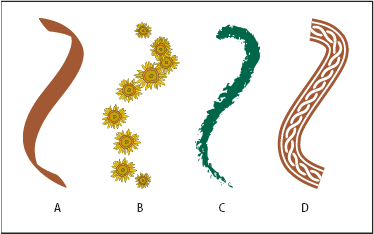
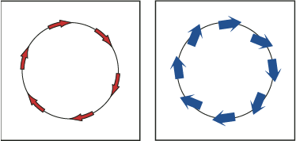

About brushes
Brushes let you stylize the appearance of paths. You can apply brush strokes to existing paths, or you can use the Paintbrush tool to draw a path and apply a brush stroke simultaneously.
There are four types of brushes in Illustrator—calligraphic, scatter, art, and pattern. You can achieve the following effects using these brushes:
- Calligraphic brushes
- Create strokes that resemble those drawn with the angled point of a calligraphic pen and are drawn along the center of the path.
- Scatter brushes
- Disperse copies of an object (such as a ladybug or a leaf) along the path.
- Art brushes
- Stretch a brush shape (such as Rough Charcoal) or object shape evenly along the length of the path.
- Pattern brushes
- Paint a pattern—made of individual tiles—that repeats along the path. Pattern brushes can include up to five tiles, for the sides, inner corner, outer corner, beginning, and end of the pattern.

Sample brushes
- A.
- Calligraphic brush
- B.
- Scatter brush
- C.
- Art brush
- D.
- Pattern brush
Scatter brushes and Pattern brushes can often achieve the same effect. However, one way in which they differ is that Pattern brushes follow the path exactly, while Scatter brushes do not.

Arrows in a Pattern brush bend to follow the path (left),
but arrows remain straight in a Scatter brush (right).
For a video on using brushes, see www.adobe.com/go/vid0044.